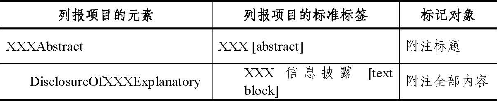
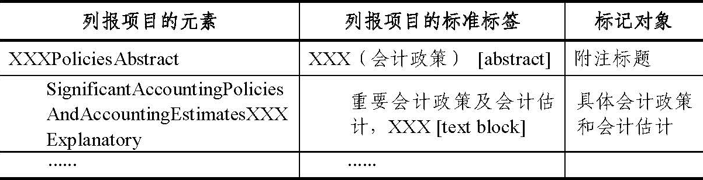
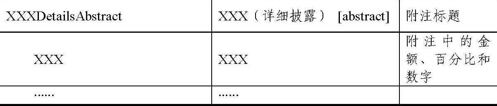

财政部
关于印发《企业会计准则通用分类标准编报规则》的通知
财会〔2013〕11号
各省、自治区、直辖市、计划单列市财政厅（局），新疆生产建设兵团财务局：
为了保证企业会计准则通用分类标准（以下简称通用分类标准）得到一致的贯彻实施，财政部于2011年5月发布了《企业会计准则通用分类标准编报规则》（以下简称编报规则），并于2011年和2012年组织实施。为了适应通用分类标准石油和天然气行业扩展分类标准、银行业扩展分类标准的实施要求，结合通用分类标准实施企业的反馈意见，我部对编报规则进行了修订，经征求意见后形成了修订后的编报规则，现印发实施。
2013年实施通用分类标准的所有实施单位，应该按照本版编报规则的要求编制和报送本单位2012年度XBRL格式财务报告。
各相关单位在通用分类标准实施中有何问题，请及时反馈我部。
联系人：财政部会计司准则一处 冷冰 赵金光
联系电话：010-68553016 68553275
传真：010-68552534
通讯地址：北京市西城区三里河南三巷3号 100820
电子邮箱：zhaojinguang@mof.gov.cn
附件：企业会计准则通用分类标准编报规则
财政部
2013年5月29日
附件：
企业会计准则通用分类标准编报规则
第一章 总则
第一条 为规范采用可扩展商业报告语言（XBRL）编报财务报告行为，保证以XBRL格式编报的财务报告质量，根据《中华人民共和国会计法》、企业会计准则、《可扩展商业报告语言（XBRL）技术规范》（GB/T25500-2010）系列国家标准、《企业会计准则通用分类标准》（以下简称通用分类标准）及企业会计准则通用分类标准相关行业扩展分类标准（以下简称行业扩展分类标准），制定本规则。
第二条 按照通用分类标准或行业扩展分类标准编制并对外报送的XBRL格式的财务报告称为财务报告实例文档，简称实例文档。如果企业应用通用分类标准或行业扩展分类标准时进行了扩展，报送的文件应包括实例文档及企业扩展分类标准。按照通用分类标准或行业扩展分类标准编制和报送实例文档和企业扩展分类标准的，应当遵循本规则。
第三条 以XBRL格式编报财务报告时，应当遵循最新版本的《可扩展商业报告语言（XBRL）技术规范第1部分：基础》（GB/T25500.1-2010）、《可扩展商业报告语言（XBRL）技术规范第2部分：维度》（GB/T25500.2-2010）、《可扩展商业报告语言（XBRL）技术规范第3部分：公式》（GB/T25500.3-2010）、《可扩展商业报告语言（XBRL）技术规范第4部分：版本》（GB/T25500.4-2010）系列国家标准、通用分类标准（20100930）、《企业会计准则通用分类标准指南》（以下简称通用分类标准指南）、行业扩展分类标准、通用分类标准相关行业扩展分类标准指南以及编报规则的要求。
第四条 本版编报规则的版本编号为20130430。
第二章 一般性技术原则
第五条 企业扩展分类标准和实例文档应当采用与通用分类标准及行业扩展分类标准一致的编码方式，即“UTF-8”编码。
第六条 在企业扩展分类标准的命名空间中，应当包含日期信息以区分扩展分类标准的不同版本。命名空间的格式为：{企业网络域名}/{依据的会计准则}/{日期}，依据的会计准则在本规则中统一为企业会计准则，简称cas，日期格式为“yyyy-mm-dd”。命名空间格式举例参见例1。
第七条 企业扩展分类标准应当包含扩展分类标准模式文件和与其相关的链接库文件。
第八条 在以通用分类标准或行业扩展分类标准为基础进行扩展时，不能直接修改、删除通用分类标准或行业扩展分类标准文件中的任何内容，也不能在通用分类标准或行业扩展分类标准中直接增加任何内容。
第九条 企业可以采用两种方式应用通用分类标准：复用（Reuse）和重新定义（Redefine）。在复用方式下，企业在构建扩展分类标准链接库文件时，应引用通用分类标准中的链接库文件并进行扩展，扩展分类标准模式文件应当引用通用分类标准入口文件和企业扩展链接库文件，或者在扩展分类标准中自定义入口文件；在重新定义方式下，企业在构建扩展分类标准链接库文件时，不再引用通用分类标准中的链接库文件，而是根据企业财务报告的实际需要，重新构建链接库文件，扩展分类标准模式文件应当引用通用分类标准核心模式文件和企业所有扩展链接库文件。
第十条 属于行业扩展分类标准实施范围的企业，必须基于相对应的行业扩展分类标准进行扩展。企业可以采用两种方式应用行业扩展分类标准：复用（Reuse）和重新定义（Redefine）。
在复用方式下，企业在构建扩展分类标准链接库文件时，应引用行业扩展分类标准中的链接库文件并进行扩展，扩展分类标准模式文件应当引用行业扩展分类标准入口文件和企业扩展链接库文件，或者在扩展分类标准中自定义入口文件。
在重新定义方式下，企业在构建扩展分类标准链接库文件时，不再引用行业扩展分类标准中的链接库文件，而是根据企业具体要求，重新构建链接库文件，扩展分类标准模式文件应当引用行业扩展分类标准核心模式文件和企业所有扩展链接库文件。
第十一条 企业以XBRL格式编制财务报告，应当遵循四级标记要求，具体如下：
一级：将财务报表一般信息、资产负债表、利润表、现金流量表和所有者权益变动表中的项目逐一标记；
二级：将每一项附注的全部内容用一个文本块元素（标签后缀为text block的元素）进行整体标记；
三级：将会计政策和会计估计附注中的每一项会计政策和会计估计内容用一个单独的文本块元素（标签后缀为[text block]的元素）进行整体标记；
四级：将附注中重要的金额、百分比和其他数字进行逐一标记。
四级标记举例参见例2。
第十二条 与合并财务报表一同提供的母公司财务报表披露的标记，应当使用通用分类标准定义的通用维度“维度——合并和个别财务报表”进行区分。若不以通用维度区分，默认为对合并财务报表披露的标记。
第十三条 企业扩展分类标准应当遵循通用分类标准或行业扩展分类标准的建模方式。企业扩展分类标准的建模方法参见例3。
第三章 企业扩展分类标准模式文件规则
第十四条 企业扩展分类标准模式文件的命名格式为{企业法定中文名称}-{工商行政管理注册号}-{日期}.{文件后缀}。文件名称各组成部分之间以英文字符集中的中划线连接。
{企业法定中文名称}是企业营业执照上的名称；{工商行政管理注册号}是营业执照上的注册号（15位数字）；{日期}是财务报表日，格式为YYYYMMDD；{文件后缀}是扩展分类标准模式文件的后缀，即xsd。企业扩展分类标准模式文件的命名格式举例参见例4。
第十五条 对于企业财务报告中标题的标记，应当使用数据类型为字符串类型（stringItemType），抽象属性为是（true）的数据项（item）元素。
第十六条 在采用通用分类标准或行业扩展分类标准进行元素匹配时，应当遵循以下原则：
（一）对于含义与通用分类标准或行业扩展分类标准元素一致的元素，应当直接引用通用分类标准或行业扩展分类标准的对应元素，不得重复定义。
（二）在进行元素匹配时，只能与通用分类标准或行业扩展分类标准中的元素进行匹配，不得直接与通用分类标准或行业扩展分类标准中没有使用的国际财务报告准则分类标准中的元素进行匹配。
（三）在采用行业扩展分类标准进行元素匹配时，可以与行业扩展分类标准中没有使用的通用分类标准的元素进行匹配。
（四）如果通用分类标准和行业扩展分类标准（如引用）中都没有适当元素，应当定义企业扩展元素。扩展元素的定义不得与通用分类标准或行业扩展分类标准已定义的元素冲突。
（五）对于含义相同的财务报告概念只能定义一个扩展元素，对于属于同一概念的不同数值，不得定义重复元素进行标记。
（六）企业扩展分类标准模式文件中定义的实元素必须是在实例文档中使用的元素，实例文档中未使用的冗余实元素不得在扩展分类标准模式文件中定义。企业扩展分类标准模式文件中定义的扩展元素必须在列报链接库中定义列报关系，列报链接库中未使用的冗余元素不得在扩展分类标准模式文件中定义。
（七）元素的期间属性与财务报告披露事项的时间特征（时点或期间）必须完全一致。
（八）如果需要披露的财务报告概念的借贷属性与匹配的通用分类标准或行业扩展分类标准元素属性相反，也属于匹配成功，但需要在编制实例文档时给该数值前添加负号。
（九）关于“其他”一类元素的匹配原则，“其他”的含义是指除已披露项目外，其重要性不足以单独披露的项目，不应以企业的“其他”元素和通用分类标准或行业扩展分类标准的“其他”元素的分类不同为由认定不匹配。只要财务报告含义相同，就应当匹配通用分类标准或行业扩展分类标准的“其他”类元素。
第十七条 企业财务报告中属于同一概念不同期间的披露事项，应当采用同一元素进行标记。
第十八条 在进行元素命名和属性定义时，应当遵循以下原则：
（一）元素的名称应以英文标准标签为基础，遵循“驼峰命名法”。通用分类标准和行业扩展分类标准实施所采用的“驼峰命名法”的规则包括：
1.元素的名称应基于英文标准标签；标签应当保持简洁，并符合企业会计准则和相关监管规定的要求。
2.如果元素的名称来自以往版本的企业扩展分类标准，当新版本的企业扩展分类标准中的英文标准标签发生变化时，元素的名称不应仅仅为了与英文标准标签保持一致而变更。
3.元素名称中的首字符不得为下划线。
4.元素名称中的首字母必须大写。
5.元素名称中不得包含空格和以下字符：( ) * + [ ] ? \ / { } | @ # % ^ = ~ `“ ”‘ ’; : , < > & $ ₤ €。
元素命名格式举例参见例5。
（二）扩展元素的名称不能与通用分类标准或行业扩展分类标准的元素名称重复。元素ID格式为{企业扩展分类标准命名空间前缀}_{元素名称}。元素ID命名格式举例参见参见例6。
（三）所有元素能否为空（nillable）属性均为true。
（四）对于资产负债表和利润表中出现的类型（type）属性是货币类型（monetaryItemType）的扩展元素，必须为其定义借贷属性。
（五）对于需要以维度方式标记的表格中的“合计”项目，应当直接使用域元素进行标记，不得定义表示“合计”的域成员元素。
（六）虚元素，除域成员元素外，其类型（type）属性是字符串类型（stringItem），抽象（abstract）属性为true，时期（period）属性是期间型（duration）。
（七）元素的替换组（substitutionGroup）属性只能是维度数据项（dimensionItem）、超立方体数据项（hypercubeItem）或数据项（item）三者之一。
（八）轴元素的名称应当以“Axis”结尾，其替换组（substitutionGroup）属性为维度数据项（dimensionItem），抽象（abstract）属性为true。
（九）表格元素的名称应当以“Table”结尾，其替换组属性为超立方体数据项（hypercubeItem），抽象（abstract）属性为true。
（十）行项目元素的名称应当以“LineItems”结尾，其抽象属性为true。
（十一）域成员元素的名称应当以“Member”结尾，其类型为域项目型（domainItem），抽象属性为true。
第四章 企业扩展分类标准链接库文件规则
第十九条 企业扩展分类标准链接库的命名格式为{企业法定中文名称}-{工商行政管理注册号}-{日期}[_{链接库类型}][_{语言类别}].{文件后缀}。
{企业法定中文名称}是企业营业执照上的名称；{工商行政管理注册号}是营业执照上的注册号（15位数字）；{日期}是该报告期间的财务报表日，格式为YYYYMMDD；{链接库类型}包括lab、cal、def和pre4种类型，分别对应标签、计算、定义和列报链接库文件；{语言类别}仅用于标签链接库文件命名，包括cn和en两种类别，分别用于中、英文标签链接库文件命名；{文件后缀}是扩展分类标准链接库文件的后缀，即xml。
企业扩展分类标准链接库命名格式举例参见例7。
第二十条 在构建企业扩展分类标准标签链接库时，除通用分类标准指南和本规则第十九条规定外，还应当遵循以下原则：
（一）标签不得包括下列特殊字符：
？ | > < * “ ” ; = . & ! @ # { }
（二）英文标签不能包含冠词“the”、“an”、“a”；但当上述词汇具有实际业务含义而非作为冠词使用时，可以出现在英文标签中。请参见例8。
（三）企业在自定义元素标签时，在同一语言下同一个元素不能同时拥有多个标签角色（xlink:role）属性相同的标签。
（四）元素的标准标签名称必须唯一，不同元素的标准标签不得相同。
（五）企业在自定义元素时，应该为每个扩展元素定义文档标签（documentation）。文档标签应该包括扩展元素的准确定义；对于未定义借贷方向的货币类型（monetaryItemType）元素，应该在文档标签中注明该元素取值为正数或负数时的含义。
（六）如果元素需要以合计项的形式列报，应当为该元素定义合计标签，并在列报链接库中将首选标签属性（preferredLabel）设置为合计标签。
（七）如果时点元素在列报时需要区分为期初或期末项，应当为该元素定义期初或期末标签，并在列报链接库中将首选标签属性设置为期初或期末标签。
（八）如果元素的借贷属性与企业财务报告披露的相反，应当为该元素添加负标签。负标签种类和应用方式举例参见通用分类标准指南及本规则例9。
（九）针对同一个元素所拥有的每一个标签角色（xlink：role）属性，都应该同时定义中英文标签。对于文档标签，企业可仅定义中文标签。
第二十一条 在构建企业扩展分类标准列报链接库时，除本规则第十九条规定外，还应当遵循以下原则：
（一）实例文档中所有元素都应当包含在企业扩展分类标准列报链接库中。
（二）企业扩展分类标准列报链接库的每个扩展链接角色（ELR）中的内容应当反映财务报告的列报层级和顺序。
（三）企业扩展分类标准列报链接库应当为元素设置次序（order）属性，同一元素在同一扩展链接角色下的同一层级重复出现时，应该有不同的次序（order）值。
（四）企业扩展分类标准列报链接库如果为一个元素设置了首选标签（preferredLabel），应当在标签链接库中为该元素定义相应标签角色的标签。首选标签（preferredLabel）的内容应该与财务报告中对应的披露内容一致。同一元素在同一扩展链接角色下的同一层级重复出现时，应该在列报链接库中设置不同的首选标签属性。
第二十二条 在构建企业扩展分类标准计算链接库时，除本规则第十九条规定外，还应当遵循以下原则：
（一）企业扩展分类标准计算链接库中应当为元素设置次序（order）属性和计算权重（weight）属性。
（二）企业扩展分类标准计算链接库中属于同一个计算关系的父元素和子元素应当具有相同的期间属性。
（三）企业扩展分类标准计算链接库中作为一个计算关系的合计项的父元素不能同时作为该计算关系的子元素。
（四）如果财务报告中包含了两个或两个以上时点或期间事项的加总计算关系，并且实例文档包含相应的数值，应当在计算链接库中为这些元素定义相应的计算关系。
（五）如果财务报告中包含了两组或两组以上的元素，并且这些元素能加总等于相同的合计项，应当在计算链接库不同的扩展链接角色中分别定义计算关系。
（六）如果同一合计项在计算链接库中存在两组或两组以上的计算关系，那么由于对不同计算关系进行交叉校验所产生的计算警告，不应作为企业扩展分类标准或实例文档的错误。企业应当检查确认这些计算警告所涉及的事实值是否存在数值错误，不应为了消除这些计算警告而删除相关的正确的计算关系，影响计算关系的完整性。此类情况举例参见例10。
第二十三条 在构建企业扩展分类标准定义链接库时，除本规则第十九条规定外，还应当遵循以下原则：
（一）企业扩展分类标准定义链接库应当为元素设置次序（order）属性。
（二）企业扩展分类标准定义链接库中，只有域元素才可设置为“维度-域（dimension-domain）”和“维度-默认（dimension-default）”属性。
（三）企业扩展分类标准定义链接库应当将每个维度表格放置在单独的扩展链接角色中。
第二十四条 企业扩展分类标准链接库中不能包含参考链接库。
第二十五条 企业在复用通用分类标准或行业扩展分类标准链接库时，应当遵循以下原则：
（一）企业扩展分类标准引入通用分类标准或行业扩展分类标准中的各链接库，应在通用分类标准或行业扩展分类标准链接库基础上进行增加、禁止等扩展操作，生成企业扩展分类标准链接库。如果计算链接库和定义链接库需要拆分，但通用分类标准或行业扩展分类标准未定义适用的扩展链接角色，则参照通用分类标准或行业扩展分类标准中相关列报链接库的扩展链接角色创建企业自定义的扩展链接角色，并在6位编码后添加小写英文字母区分。复用通用分类标准使用通用分类标准或行业扩展分类标准链接库的举例参见例11。
（二）对于通用分类标准或行业扩展分类标准中未定义的扩展链接角色，企业可以根据需要自行定义扩展链接角色。
（三）企业在复用通用分类标准链接库时，对于描述企业自定义扩展链接角色类型的角色类型（roleType）元素，其角色通用资源标识符（roleURI）属性的命名格式为{企业网络域名}/role/cas/{编码}。编码采用6位数字，首位使用6，后5位由企业自行定义。计算链接库和定义链接库如需按表格拆分扩展链接角色，则在6位编码后添加小写英文字母区分。
（四）企业在复用行业扩展分类标准链接库时，对于描述企业自定义扩展链接角色类型的角色类型（roleType）元素，其角色通用资源标识符（roleURI）属性的命名格式为{企业网络域名}/role/cas/{所引用行业扩展分类标准英文缩写}/{编码}。编码采用6位数字，首位使用6，后5位由企业自行定义。计算链接库和定义链接库如需按表格拆分扩展链接角色，则在6位编码后添加小写英文字母区分。
（五）扩展链接角色（ELR）是一组可被视为一个整体进行处理的财务信息关系的标识符。企业自定义扩展链接角色的角色类型应当包含定义（Definition）元素，该元素命名应当能清晰表示相关财务信息关系的主题，命名格式应遵循{[编码]}{财务信息主题}。其中，{[编码]}规则与角色通用资源标识符（roleURI）属性的编码规则相同；{财务信息主题}指被归为同一扩展链接角色的财务信息所共同表达的主题，通常是财务报告中的章节名称，采用英文命名方式，由企业根据财务报告自行定义。
（六）同一附注内容应当统一包含在列报链接库的同一个扩展链接角色下，同时按照附注的标记要求分层级进行排列，遵循层级低在上、层级高在下的原则。此类情况举例参见例12。
第二十六条 企业在重新定义扩展分类标准链接库时，应当遵循以下原则：
（一）企业扩展分类标准中应当重新定义链接库，不能直接引用通用分类标准或行业扩展分类标准中的链接库。
（二）在扩展列报链接库中，应当针对财务报告附注的四级标记要求中的每一级别，分别定义独立的扩展链接角色。
（三）企业应当为扩展链接角色定义角色类型（roleType）元素，且角色类型元素的角色通用资源标识符（roleURI）和标识符（id）属性必须唯一，不能与通用分类标准或行业扩展分类标准重复。
（四）基于通用分类标准扩展时，企业应当遵循以下原则：
1.企业自定义扩展链接角色的角色通用资源标识符（roleURI）属性的命名格式为{企业网络域名}/role/cas/{编码 1}/{编码 2}/{编码 3}[编码 4]。
2.{编码 1}延用通用分类标准相关披露在列报链接库中的扩展链接角色的6位数字编码。当通用分类标准中没有相关披露时，企业应当自行为扩展链接角色定义6位编码，首位使用6，后5位自定义。
3.{编码 2}使用“000000”填充。
4.{编码 3}为6位数字，表示财务报告章节编号和标记级别，其中，前5位由企业自行按一定顺序进行定义，例如财务报告披露顺序编号；最后1位表示标记级别：1代表财务报表主表，2代表附注整体标记，3代表会计政策和会计估计逐项标记，4代表附注的详细标记。
5.[编码 4]为可选项，为英文26个小写字母，计算链接库或定义链接库如需拆分扩展链接角色，则可使用[编码4]用于区别于同一附注的其他扩展链接角色。
基于通用分类标准扩展时，企业自定义扩展链接角色的角色通用资源标识符格式举例参见例13。
（五）基于行业扩展分类标准扩展时，企业应当遵循以下原则：
1.企业自定义扩展链接角色的角色通用资源标识符（roleURI）属性的命名格式为{企业网络域名}/role/cas/{所引用行业扩展分类标准英文缩写}/{编码1}/{编码2}/{编码3}[编码4]。
2.{编码 1}延用行业扩展分类标准相关披露在列报链接库中的扩展链接角色的编码1或行业扩展分类标准直接引用的相应的通用分类标准扩展链接角色的6位数字编码。当行业扩展分类标准中没有相关披露时，企业应当自行为扩展链接角色定义6位编码，首位使用6，后5位自定义。
3.{编码 2}延用行业扩展分类标准相关披露在列报链接库中的扩展链接角色的编码2；如果行业扩展分类标准相关披露在列报链接库中的扩展链接角色没有编码2，则使用“000000”填充。
4.{编码 3}为6位数字，表示财务报告章节编号和标记级别，其中，前5位由企业自行按一定顺序进行定义，例如财务报告披露顺序编号；最后1位表示标记级别：1代表财务报表主表，2代表附注整体标记，3代表会计政策和会计估计逐项标记，4代表附注的详细标记。
5.[编码 4]为可选项，为英文26个小写字母，计算链接库或定义链接库如需拆分扩展链接角色，则可使用[编码4]用于区别于同一附注的其他扩展链接角色。
基于行业扩展分类标准扩展时，企业自定义扩展链接角色的角色通用资源标识符格式举例参见例14。
（六）基于通用分类标准或行业扩展分类标准扩展时，企业自定义扩展链接角色的角色类型应当包含定义（Definition）元素。该定义元素命名应当清晰表示相关财务信息关系的主题，命名格式为{[编码]}{财务报告标记层级}-{财务信息主题}。
其中，{[编码]}规则与角色通用资源标识符（roleURI）的{编码3}[编码4]规则相同；{财务报告标记层级}指四个标记级别名称，其中一级为Statements，二级为Notes，三级为Policies，四级为Details；{财务信息主题}指被归为同一扩展链接角色的财务信息所共同表达的主题，通常是财务报告中的章节名称，采用英文命名方式，由企业根据财务报告自行定义。
企业自定义扩展链接角色的角色类型定义元素的命名格式举例参见例15。
（七）附注各标记级别的列报链接库应当遵循表1、表2和表3所示的结构。表1、表2和表3中以文字缩进表示不同的列报层级，XXX表示财务报告中的对应名称：
| 表1 | 附注二级整体标记 | |
|

|
| 注：表中元素和标签的命名格式仅适用于扩展元素和标签的命名。
|
| 表2 | 会计政策和会计估计附注三级逐项标记 | |
|

|
| 注：表中元素和标签的命名格式仅适用于扩展元素和标签的命名。
|
| 表3 | 附注四级详细标记 | |
|

|
| 注：表中元素和标签的命名格式仅适用于扩展元素和标签的命名。
|
第五章 实例文档规则
第二十七条 实例文档的命名格式为{企业法定中文名称}-{工商行政管理注册号}-{日期}.{文件后缀}。文件名称各组成部分之间以英文字符集中的中划线连接。
其中，{企业法定中文名称}是企业营业执照上的名称；{工商行政管理注册号}是营业执照上注册号中的15位数字；{日期}是该报告期间的财务报表日，格式为YYYYMMDD；{文件后缀}是扩展分类标准的后缀，即xml。
实例文档命名格式举例参见例16。
第二十八条 在确定实例文档的标记信息时，应遵循以下原则：
（一）实例文档中必须包含通用分类标准扩展链接角色“130000-公司基本情况”中定义的每一个元素的事实值。
（二）实例文档的标记信息应当准确反映企业财务报告披露的信息。
（三）对于财务报告中表示发生额或余额为0的“-”（短横线），企业应该根据实际的披露情况，在实例文档中标记成“0”。
（四）对于财务报告中的脚注，应当在实例文档中使用脚注（Footnote）元素进行整体标记，脚注中包含的金额等内容不再单独提取元素。
（五）实例文档中标记的数值应当是原始数据，金额应以元为单位。
（六）页眉或者页脚的信息，如单位名称、页码等，不在实例文档中披露。
（七）实例文档不能对同一披露项目进行重复标记，标记事项必须拥有唯一的元素、上下文、单位（Unit）和语言（Lang）属性。
（八）不能为了解决计算关系的错误而在实例文档中增加财务报告中没有披露的数据。
第二十九条 在编制实例文档时，应遵循以下原则：
（一）实例文档中报告企业的标识符（Identifier）为工商行政管理注册号，Scheme属性为工商行政管理总局网络域名。
（二）具体企业名称或具体日期不应出现在除域项目类型（domainItemType）元素以外的元素的名称中。
（三）实例文档不能包含未使用的上下文。
（四）维度上下文统一使用场景信息（Scenario），而不采用分段信息（Segment）。
（五）实例文档不能包含未使用的计量单位。
（六）百分比数字的标记不得包含百分号，而应当以小数的形式来表示。请参见例17。
（七）对于比例数据的披露，如该比例的分子和分母具有相同单位，则应当以百分比类型（percentItem）元素进行标记；如该比例的分子和分母的单位不同，应当以纯数类型（pureItem）元素或元/每股类型（pershareItem）进行标记。
（八）域成员与行项目元素不能混用。请参见例18。
第三十条 在处理实例文档中的时间信息时，应遵循以下原则：
（一）实例文档中日期的格式应当定义为yyyy-mm-dd。
（二）在实例文档中，对于附注中包含的文字信息的标记，无论该文字描述事件是否影响整个会计期间，都应当将上下文的时期元素的日期设置为本次报送的会计期间。请参见例19。
（三）在同一实例文档中，同一日期不能同时作为上下文（Context）的时期（Period）元素的起始日期（startDate）和结束日期（endDate）。
（四）在同一实例文档中，同一日期不能同时作为上下文的时期元素的起始日期和时点（instant）元素的日期。
附录：《企业会计准则通用分类标准编报规则》应用示例